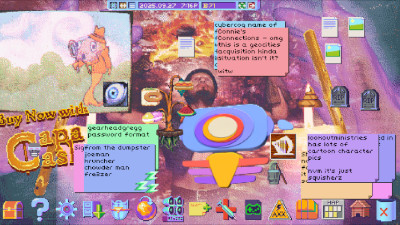

Muhammad Fadil R.
Note: I've used em dashes since before AI was even a thing.
29/09/2025 - "Bridge Over Troubled Water," Growing Up, and Filial Love
28 September 2025, 23.31
I'm on your side, oh
When times get rough
And friends just can't be found
Like a bridge over troubled water
I will lay me down
There is bound to be someone you think of when you listen to the lyrics to "Bridge Over Troubled Water" by Simon & Garfunkel. Someone you’d drop everything for just to comfort them.
For many, it’s likely their mother.
What a strange thing it is, the bond between a child and their mother. Sometimes, they have such different views from her and disagree with her on so many things. And yet, they can’t help but love her deeply in a kind of unconditional love reserved just for her -- one that allows them to go out of their way to ease her mind, as the song so aptly describes.
I'll take your part, oh
When darkness comes
And pain is all around
At least, for some, that’s what they believe. In their head, the idealized version of themselves would drop the whole world for their mother. Maybe they have even attempted to prove that, by trying to become the best kind of child they can be. However, there might still be this nagging feeling that they’re not doing enough -- that they can be an even better child for her. They know fully well that there’s a limit to that -- a child is their own person, after all. Still, the feeling persists.
A feeling that gets more and more intense as one grows up and sees their mother age with them.
Sail on, silver girl
Sail on by
Your time has come to shine
All your dreams are on their way
As one sees more and more silver strands of hair populate their mother’s head, mixed feelings start filling their heart. They are overjoyed to see their mother age gracefully and that she will have more time to pursue things she’s always wished to pursue, but they have to learn to balance this joy with the lingering thought that they could do better as a child.
They fear that they aren't being as good a friend to her as she deserves -- sailing right behind her as she ventures further in her life, supporting her through all her worries, being there to witness her continue to shine.
They try to become more present, lending an ear whenever she needs it. They reach out more often, even if only to share little moments of the day. They find joy in the simplest routines done together at home. They try to prove to themselves that they’ve become good company to their mother.
Yet, all of that still doesn’t feel enough.
Maybe it will never be enough.
Maybe that is part of what makes the love a child has for their mother so special.
Still, the child carries on. Just like their mother did for them.
Note: I know that "Bridge Over Troubled Water" was originally written as a love song for a partner. Fortunately, Paul Simon was generous enough to never use any spouse-specific vocabulary, allowing it to trigger this kind of reflection. It is near impossible not to relate it to filial love anyway, what with it focusing so much on unconditional love and aging.
00.47, 01.39, 03.15
27/09/2025 - Hypnospace Outlaw and the Essence of Nostalgia
27 September 2025, 15.54
Oh boy. Where do I even start with this game?
Hypnospace Outlaw is a 1999-era Internet simulator set in a fictional web service accessed in your sleep. You act as a community moderator, combing through personal webpages to find and report violations through its puzzly gameplay. I bought it on sale last week because I'd heard lots of good things about it and was in the mood for some detective-y games. I did not expect to be served one of the most beautiful video game experiences I've ever had. Sure, it WAS a detective-y Internet sim set at the turn of the millennium, just as advertised, but it turned out to be so much more than that.
It has been described, lovingly, as a nostalgia bait for those who lived through Geocities and that period of the Internet in general. This should be an interesting hook for someone as nostalgic as I am -- I spend a lot of my time thinking about the past, trying to piece together fragments of my childhood and teenage years, stuff like that. However, that never factored into my decision to buy the game. I simply didn't think that it could trigger any nostalgia in me; after all, I didn't live through the 1999-early Y2K-era Internet myself.
Yet, somehow, it still worked. The game didn't give a fuck that I didn't live those days; it delivered those sweet nostalgic feelings anyway.
It left me with a deep melancholy I can't describe -- the same feeling I get when I look at old things I used to like, old blogs I used to write on, music I used to listen to, photos of old friends whose company I used to take for granted. It didn't have to portray the specific past I lived to trigger these emotions -- it taps into the very things that make nostalgia what it is. The way you never know you're living what would become the good old days, the sheer velocity of the passage of time, the way people leave and fade away as they move on with their lives...
I can't write any more without spoiling what makes the game so good for me. Just know that I recommend this game if you like media with characters you can deeply care about or just miss the old Internet. If you have played it, though, feel free to read on.
Read on
Those three italicized points above are best represented by how the game handles the passage of time, which is itself directly connected to how well it makes you care about and feel for the characters. It does so with subtlety through the investigative gameplay loop -- you visit their webpages, read their stuff, try to find content to flag, then move on. Time skips, and you do that all over again, maybe now reading some small updates about their lives. You never notice how these fictional people start to occupy a space in your mind after several rounds of investigating their pages. You start caring about them. You start trying to find out what went on in their lives after every time skip. This is true even for the utterly obnoxious characters, and who better to exemplify this ability to make you care than ZANE_ROCKS_14?
Dear God, is there no redeeming quality to that kid. The game never really tries to give him one; it allows him to become an obnoxious bully for the sake of it. It allowed me to hate his guts so utterly that I always came back to his page to see what shenanigans he was up to then and look for community violations to nitpick. It allowed Zane to sneak up on me and made me inadvertently care about him more than anyone else in the game.
Then it pulled the rug from under my feet. A Y2K crash happened, the web service was taken down, time skipped twenty-five years into the future. Honestly, I didn't like the crash and the huge time-skip at first; it felt so abrupt and unearned. However, I played on and found out that Zane was killed during the crash. It was such a gut-punch that I couldn't help but tear up. He had burrowed a spot in my head -- as someone I hated, but he was there nevertheless -- and then he was just... absent.
No, he had been absent for 25 years. People must've grieved, moved on, and found new happiness during that time, and there I was, only finding out about the news decades later.
And it's not just his passing that hit so hard; it's also the entire Hypnospace web now being devastatingly empty, having been completely abandoned for decades.
The vibrant community I helped moderate, full of people I started caring about without even knowing it, is now just an empty husk of itself, surviving only as archives frozen in time. This gave the exact same feeling I get when I go to old blogs, read through old Facebook posts, and visit abandoned forums. I grieved for a fictional space and its fictional people.
This was such a unique experience in caring about characters. Unlike in other games, your care and concern for the characters aren't really driven by the them being well-written. Don't get me wrong, they ARE well-written, but that's not what hit the hardest since your view of them is limited by the old-Internet medium. You don't really see that much of them, like how actual Internet posts are just very small snippets of people's lives and personalities.
What really drove your care instead is the way the game's mechanics and progression handle your interaction with the characters. By ever so abruptly removing your connection to them (by two and a half decades, at that), you are forced to deal with the weight of utter absence. Only in their absence do you realize how much they matter -- if not to you, then to the world the game is built on -- however banal they are.
This applies to the game's world as well. Up until that crash and time-skip, Hypnospace was just a goofy parody of the Internet, full of eccentric people, campy music, and rule violations to flag. You focus on solving your cases, letting the world fade into the background. Only when time yanks it out of your hands do you realize how meaningful that world is to you.
It invites you to reflect on the impermanence of our own world. On how the present, which we so often take for granted, will go on to become fond memories in the future. On the fact that people matter, even if they just exist.
And it does so in a way you could never see coming unless you've read about the game or watched video essays about it. And for all of that, I can comfortably call this game one of the most beautiful ones I've ever played.I hope to stumble upon one like it again.
I'd also love to write about the beauty of the ending and the music, but I'm kinda tired of typing, lol.
Until next time.
17.13, 18.00, 23.51
October 2025
I hate how TikTok is so adamant about forcing you to use their app that you can't even watch videos sent by link on a browser anymore. No, TikTok, that won't make me download your app. If anything, your crappy practice drives me away from it even more.
Extra unimportant but this is my first mobile update.
I just watched It Was Just an Accident.
Goddamn, what a wonderful movie. Love the humanity, the characters and that absolute masterclass of an ending. And I definitely love how “popcorn” the whole thing was – hearing that it was a political thriller, you’d expect that it’d be a lot more “thinky” lol.
10/10 best impulse watch ever.
Hello world